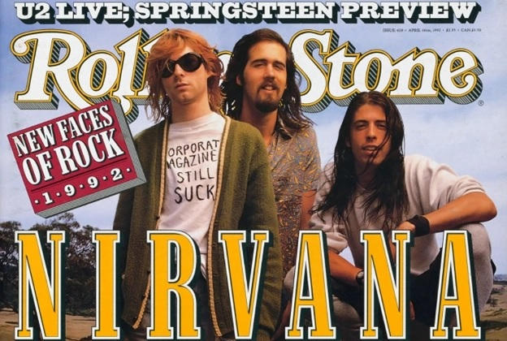

Nirvana in the 90s

The 90s were a good time for music enthusiasts.
One of the most cherished bands to give us deep songs during this time was Nirvana.
This website takes a look at the legacy of Nirvan during the 90s.
There are links for their major albums, their top 15 greatest hits, and their cultural influence in the 90s.
Explore more by clicking the links below